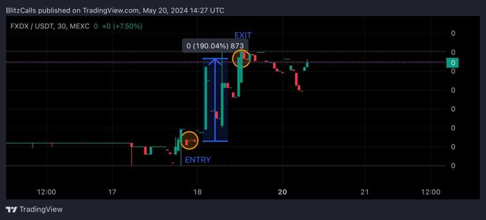

Blitz Calls
Welcome to Blitz Calls: Your Premier Crypto Signals Channel on Telegram
Blitz Calls is your ultimate destination for crypto trading signals, offering unparalleled insights and expert advice to help you navigate the volatile world of cryptocurrency. Our Telegram channel is designed for both novice and experienced traders who are looking to maximize their profits and stay ahead of the market trends.Why Choose Blitz Calls?
Proven Track Record of Success
Our members have consistently reported incredible gains, with some achieving over 300% profits on their investments. This is a testament to the accuracy and reliability of our signals, which are meticulously analyzed and strategically timed to capitalize on market movements.Expert Analysis and Insights
Blitz Calls is powered by a team of seasoned crypto traders and analysts who bring years of experience to the table. We utilize advanced technical analysis, market research, and proprietary algorithms to deliver high-quality signals that you can trust.Real-Time Alerts
Stay ahead of the game with our real-time trading alerts. As soon as we identify a profitable opportunity, you’ll receive an instant notification on Telegram, ensuring you can act quickly and efficiently to maximize your returns.Comprehensive Market Coverage
Our signals cover a wide range of cryptocurrencies, including Bitcoin, Ethereum, altcoins, and emerging digital assets. Whether you’re looking to trade popular coins or discover hidden gems, Blitz Calls has you covered.Community and Support
Join a thriving community of like-minded traders who share tips, strategies, and experiences. Our channel fosters a collaborative environment where members can learn from each other and grow together. Plus, our support team is always ready to assist you with any questions or concerns.What to Expect
- Daily Signal Updates: Receive daily signals with detailed entry and exit points, stop-loss levels, and profit targets.- In-Depth Analysis: Gain access to in-depth market analysis and breakdowns of our trading strategies.
- Exclusive Content: Enjoy exclusive content such as webinars, tutorials, and market insights from our expert analysts.
- Risk Management: Learn effective risk management techniques to protect your capital and maximize your gains.
- Performance Tracking: Keep track of your performance with our transparent and easy-to-follow tracking system.
How to Join
Joining Blitz Calls is simple. Follow these steps to get started:1. Download Telegram: If you haven’t already, download the Telegram app on your smartphone or desktop.
2. Join Our Channel: Click here to join Blitz Calls on Telegram.
3. Subscribe: Choose the subscription plan that suits your needs and start receiving signals immediately.
Stay Connected
Stay connected with Blitz Calls on our various social media platforms to keep up with the latest updates, news, and tips. Follow us on Twitter, Facebook, and Instagram for additional content and announcements.Conclusion
Blitz Calls is more than just a crypto signals channel; it’s a community of traders dedicated to success. Whether you’re aiming for substantial profits or looking to sharpen your trading skills, Blitz Calls provides the tools, insights, and support you need to achieve your goals. Join us today and take the first step towards a more profitable future in crypto trading.